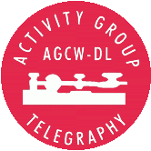

|  |
THE EUROPEAN CW ASSOCIATION
EuCW/AGCW QRS Week
|
 |
QRS-W 2020
Results
Participants Class A - 100W RF
==============================
c/s QSO Err Award
2E0DPH 8 0.0
DC2TS 9 0.0
DC8ED 7 0.0
DD7CW 14 0.2
DL1AH 4 0.0
DL1DXL 18 0.2
DL9EBG 19 1.0
F4GOP 24 1.6
G0EML 39 1.0 A2
G0FDC 3 0.0
G4LHI 100 0.2 A1
IK2RMZ (observer)
M0ILR 10 0.2
M0PBZ 15 0.0
M0UZE 8 0.0
M5ABN 10 0.2
OH7QR 27 0.2 A3
PA2ST 3 0.0
PG4I 11 0.2
Participants Class B - 5W RF
============================
c/s QSO Err
DG1FBN 1 0.0
DJ6UX 28 0.2 B2
DM2DZM 39 0.0 B1
G4DNP 8 0.8 B3
Participants Class C - SWL
none
Participants Club Class
=======================
AGCW 242 Club Award
FISTS 239
UFT 24
VHSC 100
Leading Participants MRM Class
==============================
OH7QR 203 MRM Award
M0UZE 110
M0ILR 108
...
The counts refers to the sympathy votes of the participants. Any
voter sponsors up to 3 preferred OPs with a number of point
corresponding to his qso number.
Leading Participants RBN Class
==============================
1769 IK2RMZ (observer)
519 PA2ST RBN Award
453 G4LHI
452 F4GOP
301 DJ6UX
267 PG4I
240 M0PBZ
...
The count refers to European RBN Spots at 14 WpM or slower.
Comments:
most participants reported that they enjoyed the event.
Some claimed they experienced poor condx. This is true in the
sense that we are in the sunspot minimum. Yet, factually the
conditions were regular. From my point of view in the southern
pre-Alps I felt rather lucky than unlucky because the QRN stayed
moderate, unfortunately I did not encounter sporadic E condx.
One participant mentioned the low number of those who called CQ
QRS - this is true but using such a cq call is not mandatory, I
would not even recommend it because it might trigger the rule that
it is generally unwise to answer a CQ XYZ call unless you know for
sure what XYZ means.
Someone else encountered a station with decent CW produced by a
mouthpiece and an air flow sensor.
My highlight was a contact with a Belgian newcomer who declared
to be on his very first CW QSO. I had several other QSOs with
stations who were brand new to CW. Not all of these stations
sent in a log, but they are the main players.
Thanks to all es 73
Privacy Policy